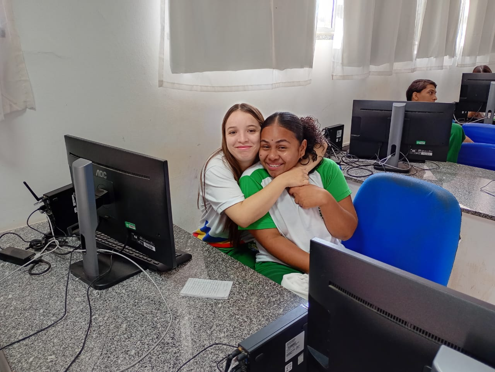

Sobre o Curso
Análise e Desenvolvimento de Sistemas
Turno: Manhã
Ano: 2° ano do ensino médio
Modalidade: Presencial
Área: Tecnologia da Informação
O curso de Análise e Desenvolvimento de Sistemas forma profissionais capacitados para analisar, projetar, desenvolver, testar, implantar e manter sistemas computacionais.
Durante nossa jornada no turno da manhã, exploramos tecnologias modernas, metodologias ágeis e as melhores práticas do desenvolvimento de software.
Conheça as Criadoras

Davilla e Erica - As criadoras do vlog digital
Estudantes do 2° ano - Turno Manhã
Nosso Vlog
Acompanhe nossa jornada acadêmica através de vídeos, documentando experiências, aprendizados e projetos desenvolvidos durante o curso.